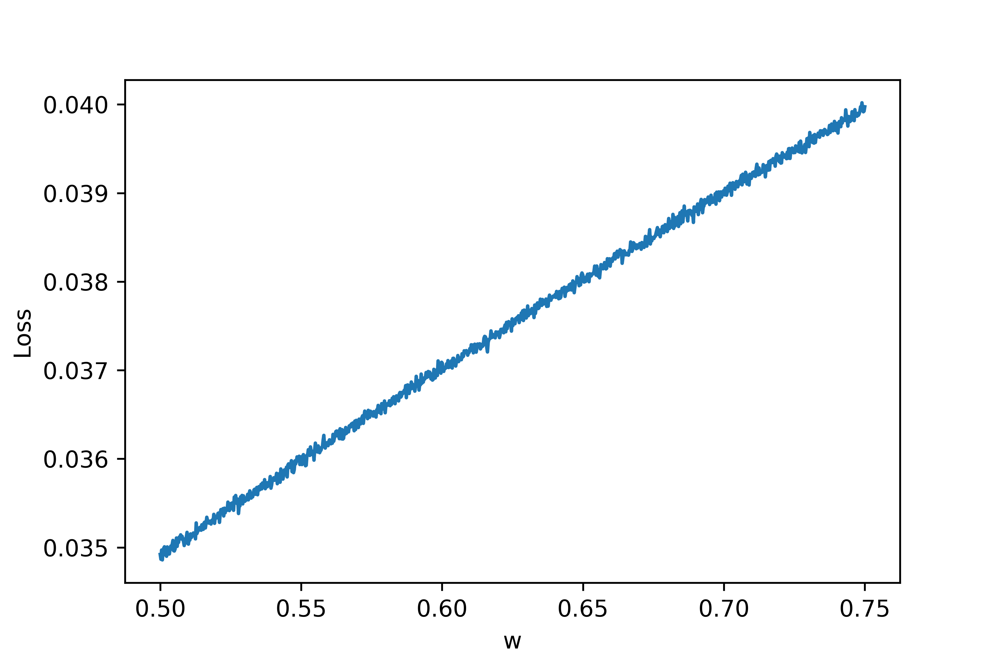

Loss Landscapes Emerging from BNNs
Introduction
My research is currently focused on training network of biological neurons (BNNs) on machine learning (ML) tasks. In another post, I dive into a specific task well suited for BNNs: training BNNs on spiking data. In that work, I encountered a number of issues. One issue was designing a clear loss reflecting the desired solution of the BNN. I found that the loss landscape* exhibited discontinuities and very chaotic gradients at the micro scale but had structure at the macro scale. This blog post focuses on analyzing loss landscapes for some simple examples with the aim of building up some understanding and proposing solutions to facilitate training in such contexts.
* The loss landscape is a surface of losses on a subset of the data resulting from small perturbations in network parameters. For example, if the network, \(N_w\), just has one parameter, \(w\), then the loss landscape is the set \(\{\text{loss}(N_{w'}(X),Y^*) | w - \delta w \leq w' \leq w + \delta w\},\) where \(\delta w\) is specified and \(X, Y^*\) are the inputs and targets, respectively, for the subset of samples.
Most Simple Case
The simplest case I considered here was simply turning a single Hodgkin-Huxley (HH) neuron off, so that it does not spike anymore. Let \(\eta = (V, m, n, h)\) denote the neuron state which is composed of voltage and gating variables. If \(a(t)\) is the output of the neuron at time \(t\), then we can let the loss just be the average output over some time interval \(\tau\): $$L(\eta) = \frac{1}{\tau} \int_0^\tau a(t) dt.$$ Ultimately, we aim to minimize \(L\), meaning that the neuron outputs as little as possible.
Loss Landscape


